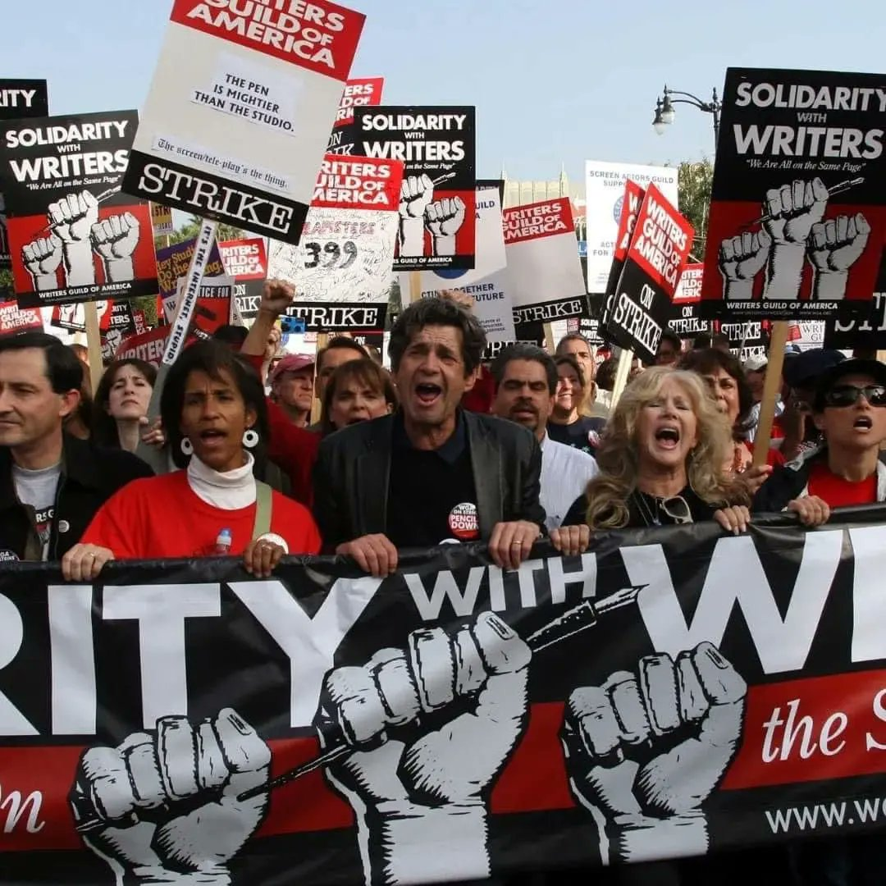
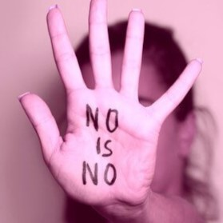

A principio de 2023, los guionistas de Hollywood representados por el Sindicato de Guionistas de Estados Unido (WGA), se declararon en huelga. Esta acción laboral sin precedentes paralizó gran parte de la industria del cine y la televisión, generando un impacto significativo en la producción de contenido.
El reconocido actor de doblaje mexicano, Alfonso Obregón, conocido por prestar su voz a personajes icónicos como Shrek, fue detenido por las autoridades mexicanas bajo acusaciones de abuso sexual.
El reconocido actor de doblaje mexicano, Alfonso Obregón, conocido por prestar su voz a personajes icónicos como Shrek, fue detenido por las autoridades mexicanas bajo acusaciones de abuso sexual. El movimiento #MeToo surgió como una campaña en redes sociales en 2017, impulsada por el hashtag #YoTambién. Su objetivo principal fue visibilizar y denunciar el acoso y abuso sexual, especialmente en ambientes laborales y de poder.
